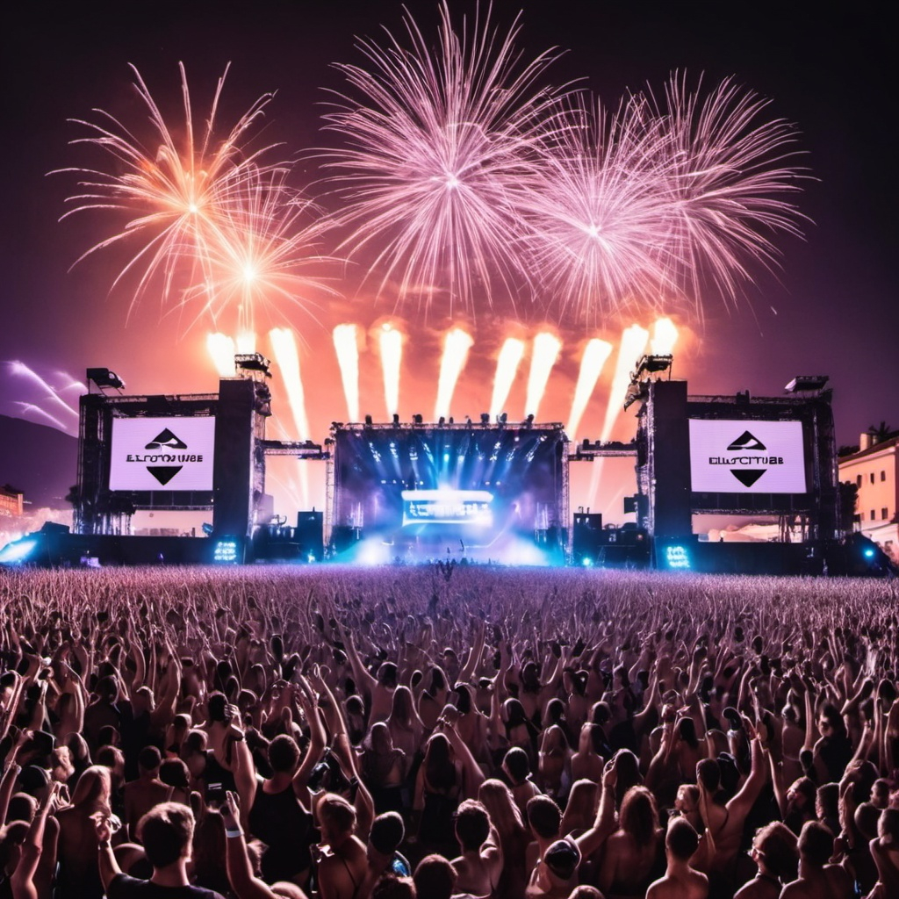
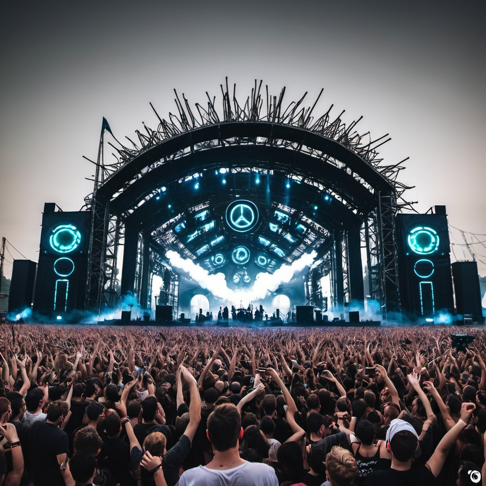
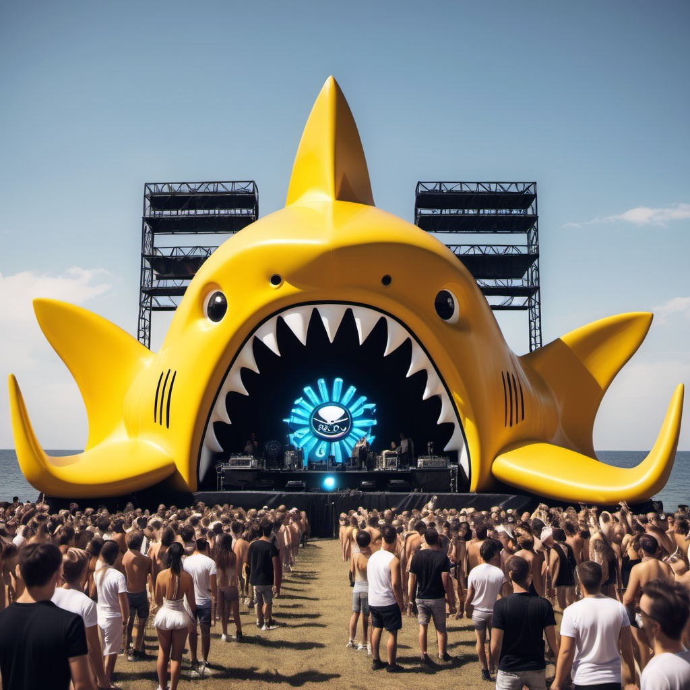

Prepárate para tres días llenos de música electrónica vibrante, donde los mejores DJs del mundo se reunirán para ofrecer sets inolvidables en múltiples escenarios. ElectroVibe Fest ha curado un lineup que representa lo mejor de la música electrónica contemporánea, desde los sonidos más underground hasta los himnos más icónicos del género. Disfruta de una variedad de estilos
en nuestros escenarios mas icónicos
15 de Julio de 2025
| Hora |
Main Stage |
Resistance |
Cutty Shark |
| 16:00 |
Morten |
Ferry Corsten |
Brennan Heart |
| 17:00 |
Acraze |
Tungevaag |
Angerfist |
| 18:00 |
Mike Williams |
DeadMau5 |
Adam Beyer |
| 19:00 |
Maddix |
Jay Hardway |
Solomun |
| 20:00 |
Armin Van Buuren |
Deorro |
Plastik Funk |
| 21:00 |
Afrojack |
Charlotte de Witte |
Vini Vici |
| 22:00 |
Hardwell |
Gordo |
Slander |
| 23:00 |
David Guetta |
Carl Cox |
Amelie Lens |
16 de Julio de 2025
| Hora |
Main Stage |
Resistance |
Cutty Shark |
| 16:00 |
Joel Corry |
Dubdoggz |
Solomun |
| 17:00 |
Dubvision |
Third Party |
Mr Pig |
| 18:00 |
Zedd |
Justin Mylo |
22 Bullets |
| 19:00 |
Marshmello |
Cat Dealers |
Kaaze |
| 20:00 |
Lost Frecuencies |
Ummet Ozcan |
Topic |
| 21:00 |
Tiesto |
Nervo |
Carta |
| 22:00 |
Kygo |
Le Twins |
Alison Wonderland |
| 23:00 |
Calvin Harris |
Nicky Romero |
ATB |
17 de Julio de 2025
| Hora |
Main Stage |
Resistance |
Cutty Shark |
| 16:00 |
Fisher |
Danny Avila |
Tujamo |
| 17:00 |
Don Diablo |
Amelie Lens |
Claptone |
| 18:00 |
Vintage Culture |
Jamie Jones |
DJ Iota |
| 19:00 |
Dimitri Vegas |
Skrillex |
W&W |
| 20:00 |
Steve Aoki |
Oliver Heldens |
Alok |
| 21:00 |
Jonas Blue |
Rezz |
Deborah de Luca |
| 22:00 |
Swedish House Mafia |
DJ Snake |
Nora en Pure |
| 23:00 |
Martin Garrix |
Kura |
Mattn |
Escenarios
-
Main Stage

-
Resistance

-
Cutty Shark
